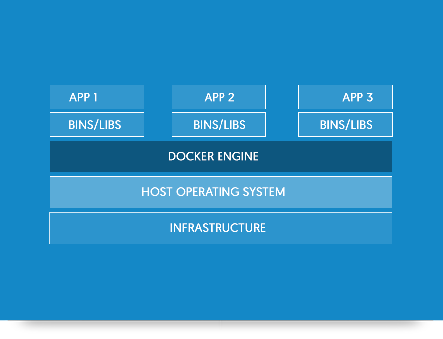

Your browser doesn't support the features required by impress.js, so you are presented with a simplified version of this presentation.
For the best experience please use the latest Chrome, Safari or Firefox browser.
Containerize This
Intro to Docker
Docker is a containerization technology
A container is an execution environment
Containers have an isolated CPU, Memory, I/O, and Memory
But they share
the kernel
Containers are based on images
Images are a collection of read-only layers
This is the Union File System (UFS)
Each layer holds a file system difference

Soooo..a container is an image
With a thin read/write layer on top.
Containers can share an image

Let's talk about components...
Components of Docker
Docker Engine
A lightweight runtime that runs containers

Components of Docker
Docker CLI
The command line for Docker
Usage: docker COMMAND
A self-sufficient runtime for containers
Options:
--config string Location of client config files (default "/Users/ggoodrich/.docker")
-D, --debug Enable debug mode
--help Print usage
-H, --host list Daemon socket(s) to connect to (default [])
-l, --log-level string Set the logging level ("debug", "info", "warn", "error", "fatal") (default "info")
--tls Use TLS; implied by --tlsverify
--tlscacert string Trust certs signed only by this CA (default "/Users/ggoodrich/.docker/ca.pem")
--tlscert string Path to TLS certificate file (default "/Users/ggoodrich/.docker/cert.pem")
--tlskey string Path to TLS key file (default "/Users/ggoodrich/.docker/key.pem")
--tlsverify Use TLS and verify the remote
-v, --version Print version information and quit
Management Commands:
checkpoint Manage checkpoints
container Manage containers
image Manage images
network Manage networks
node Manage Swarm nodes
plugin Manage plugins
secret Manage Docker secrets
service Manage services
...
Components of Docker
Registry
Store and distribute images
Components of Docker
Docker Volume
Data that lives OUTSIDE the UFS on the HOST
Components of Docker
Docker Swarm
Cluster Docker Engines
Docker for Mac is a .dmg
- No Virtual Box/VM software
- Uses the xhyve Hypervisor
Docker for Windows is a .exe
- No Virtual Box/VM software
- Uses Windows Hyper-V package
Docker for *nix Distros
- Uses a package manager
- chgroup and namespaces
1979: In the beginning, there was chroot

2007:
Control Groups (thx Google)
2008:
LXC - cgroups and namespaces
2013: DOCKER
2014: Rocket
2016: Windows containers
Thanks!

Development
Never install anything locally
Ever again
Production
Baked in scalability
No more "It works on my box"
It's not all whales and rainbows
Logging/Monitoring
Disk space
#/media/File:Kernel_Layout.svg){kind=link}